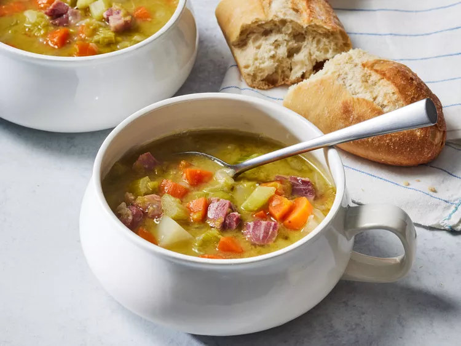

Back
Split Pea Soup

Description
There's nothing like classic split pea soup to satisfy your comfort food craving.
This split pea soup recipe is complete with ham, hearty veggies, and simple seasonings.
Ingredients
- 2 ¼ cups dried split peas
- 2 quarts cold water, plus more as needed
- 1 ½ pounds ham bone
- 2 onions, thinly sliced
- ½ teaspoon salt
- ¼ teaspoon ground black pepper
- 1 pinch dried marjoram
- 3 stalks celery, chopped
- 3 carrots, chopped
- 1 potato, diced
Steps
- Gather all ingredients.
- Place peas in a large stockpot and cover with several inches of cold water; let soak, 8 hours to overnight.
Drain, rinse, and return peas to the pot.
- Add 2 quarts of cold water, ham bone, onion, salt, pepper, and marjoram to the stockpot.
Cover, bring to a boil, and simmer for 1 ½ hours, stirring occasionally.
- Remove ham bone; cut off meat, dice, and return meat to soup.
- Add celery, carrots, and potatoes.
- Cook slowly, uncovered, until vegetables are tender, about 30 to 40 minutes.
- Serve and enjoy!